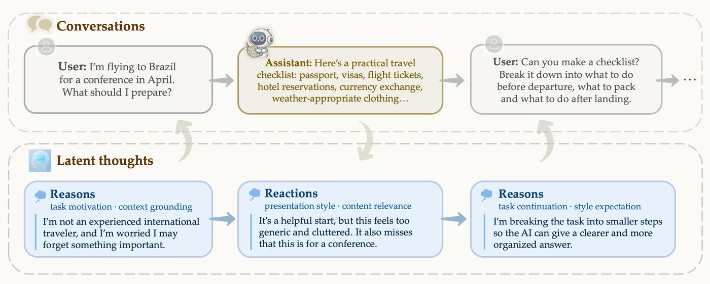

Research position
Undergraduate Researcher
Social Cognitive AI (SCAI) Lab · Johns Hopkins University
- Dates
- Mar 2024 – Present
- Advisor
- Prof. Tianmin Shu
Overview
SCAI builds human-centered AI by engineering machine social intelligence: systems that understand, reason about, and interact with people in real-world settings.
Timeline
- Mar 2024Joined SCAI
Undergraduate researcher with Prof. Tianmin Shu.
- 2026ThoughtTrace
Built evaluation pipelines and ran experiments comparing model-predicted user thoughts with human annotations.
- 2026Best Paper Award, ICML 2026 RLxF Workshop
For the ThoughtTrace paper.
- PresentResearch infrastructure
Building experimental platforms for ongoing lab projects.
Featured project

Best Paper · RLxF @ ICML 2026
ThoughtTrace
A large-scale dataset pairing real-world human–AI conversations with the thoughts users had behind each turn.
1,058 users2,155 conversations10,174 thoughts
View project →